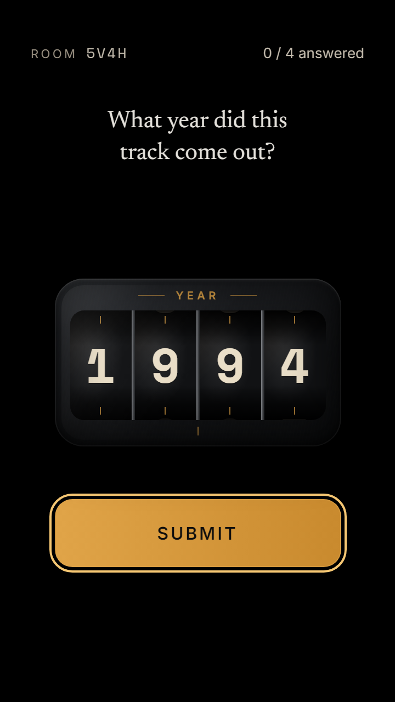

Kairosong
Kairosong
Every song has its time.
Guess when.
The party game that listens to your music. A music quiz, a blind test, a game night — where the only question is the year.
At home, at a party, at the bar.
Free. No account, nothing to install.
How it works
Three beats
Your music
Whatever’s playing in the room: your playlist at home, the sound system at a bar, a record at a party.
Kairosong listens
It hears a few seconds and knows the song.
Everyone guesses
Each player picks the year on their own phone. Then the answer drops.
Once everyone has answered, the gap shows each player’s year on the same line — then the host reveals.

What you need
Something that plays, and a phone each
Something that plays music
A speaker, a record player, a radio, a TV… any source the room can hear — or a bar that’s already playing it.
One phone per player
The host shows a QR code, everyone scans it and they’re in.
No account. No app store. Nothing to install.
The rules
Guess the year, score the gap
- The exact year15pts
- Within 2 years10pts
- Within 5 years5pts
- Within 10 years2pts
The fine print
- A live, a remaster, a reissue: same song, same year. A 1988 live Billie Jean is still 1982.
- Someone else’s cover, or a remix: that version has its own year.
- When a different version was playing, the reveal says which.
- Song not recognised? The host listens again or skips it. Nobody loses points.
Screens
From the lobby to the last song

The home screen 
The lobby, with its QR code After the reveal, the story behind the song 
The end-of-night summary
The word
Kairos — ancient Greek for the right moment, the one that matters.
A song can hold one: a summer, a first dance, a year you’ll never forget.
Kairosong turns whatever’s playing into a game about time.
Questions
Before you press play
Does Kairosong play music?
No. It listens to whatever’s already playing — your speaker, a bar’s sound system, the radio. A few seconds go to the recognition service, then the clip is thrown away.
Do I need Spotify?
No. Any source works: a streaming app, a record, a CD, the radio. If the room can hear it, Kairosong can too.
Is it free?
Yes, completely. No ads, no subscription, no account.
Does it work on iPhone?
Yes, in Safari — for the host and for every player. One exception: DJ mode on a single phone, playing and listening on the same device, needs Android.
How many players?
As many phones as you like — a room of 2 works, a room of 10 is a party.
What about my data?
No account, no email: your name is temporary and goes away with the game. Everything else is on the privacy page.
Ready when the music is.
Play